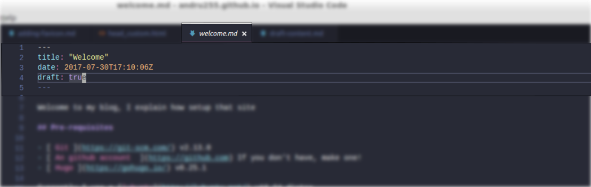

Hi, in this post, I talk about draft value of every post, what’s that?

Draft content
CMSs like drupal, wordpress and gohugo shows a default state of every post, called draft.
This type of content, is for pre-production reasons, for review, or approve for me, or for a group of people to release a good post or content. I think that’s a good practice for many reasons like you see.
Handling on gohugo
When create a post on terminal like a:
~ hugo new posts/my-new-great-article
Takes the file default.md as template, that file is from archetypes folder, and contains:
---
title: "{{ replace .TranslationBaseName "-" " " | title }}"
date: {{ .Date }}
draft: true
---
As you see, this file contains some values at the top, these couple of values it’s called too Front Matter
How to view
By default every post has the value true in the draft property, I following the steps of getting up a local hugo server
How to build
Using only:
~ hugo -D
Where:
- -D, takes content marked as draft
The good practice
When you really sure to publish your content, change the value false to true because the posts approved needs to be deployed and draft needs to be still waiting.
It means, I need to update all my posts changing the draft value :) and deployment gets more easy with that command:
~ hugo
NOTES
Remember all commands explained in this post was executed into my folder ~/mysites/andru255.github.io/, so take care about your blog path